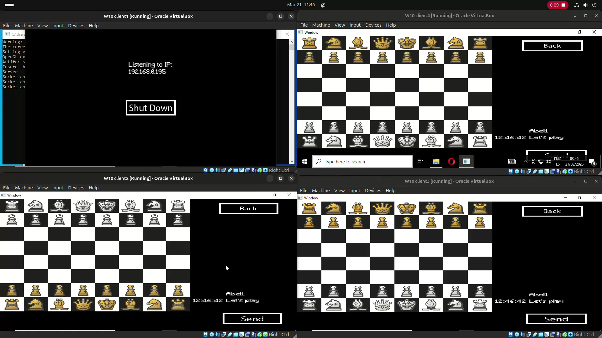

This game is an online chess game, and can look simple, but has a peculiarity, depending in the screen the player is, the connection could be server-client or P2P.
This game was developed with the framework SFML, making use of their TCP sockets, and I was responsible for developing the network part.

Implementation
We wanted to give the users the capability to choose between being a server or a client.
To make this possible, when the application starts, it asks the user what they want to be.
If they choose server mode, they will open a port to make possible the connection. And if they choose client mode, they must type the IP in order to connect with the server.
The server handles the next client requests:
- Connect To Server
- Login
- Create Room
- Join Room as Player
- Join Room as Spectator
- Send Message
- Ready to Play
Once the match has begun, all the clients' sockets inside the room are closed, and connection P2P starts.
In this state the "ruler" is the client who has been inside the room the longest.
During the match the ruler handles the next requests:
- Exit Room
- Send Message
- Select Piece
- Deselect Piece
- Move Piece
- Pawn Promotion
- Castle
- En Passsant